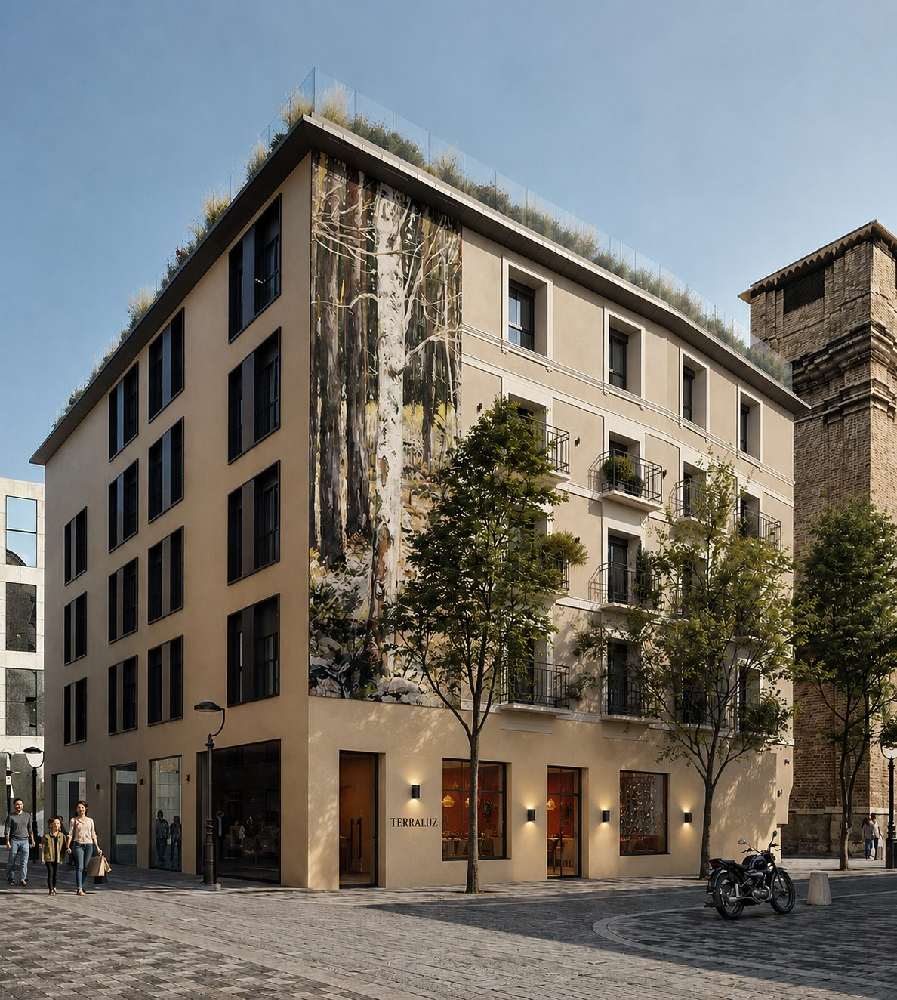
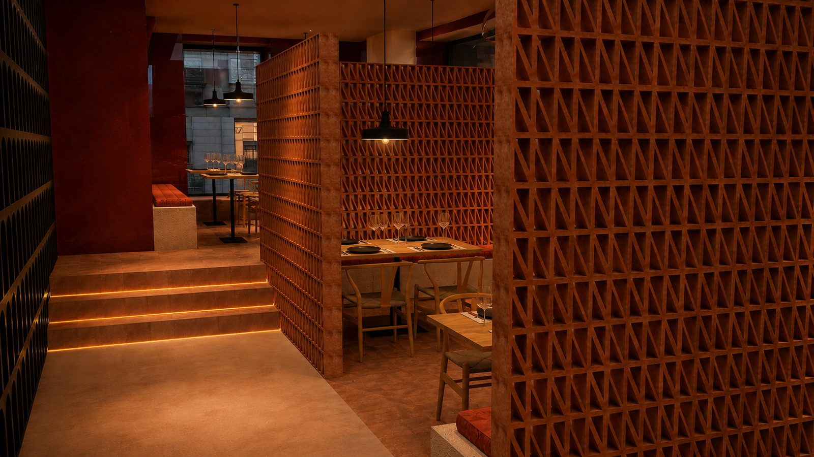
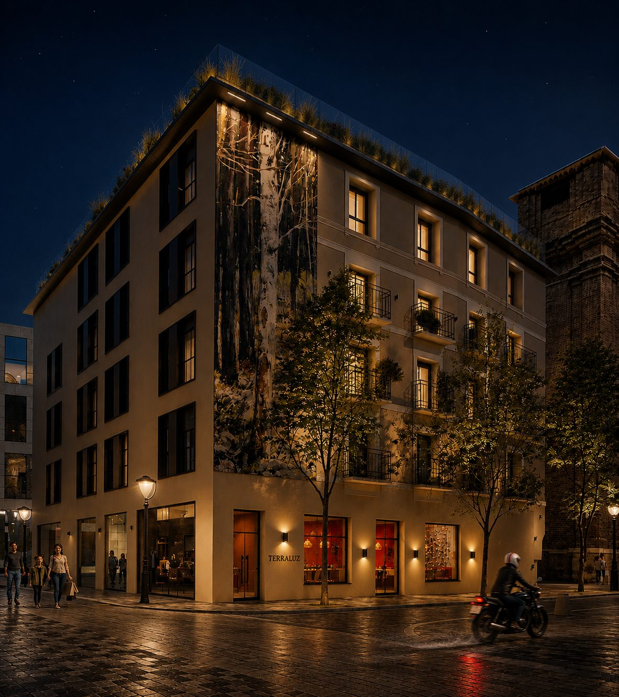
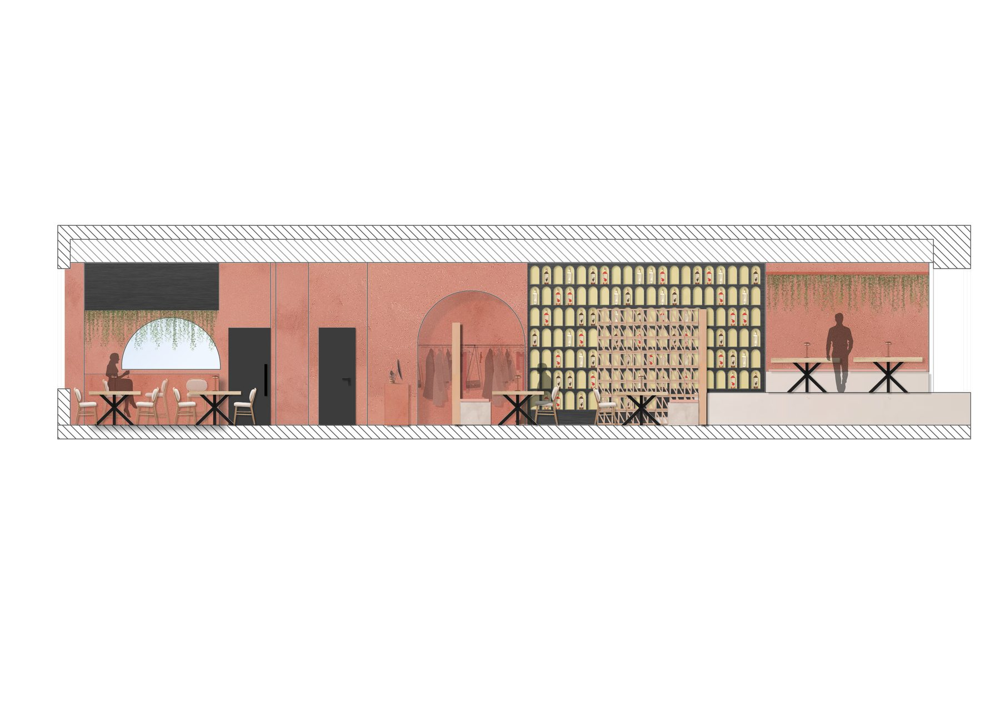
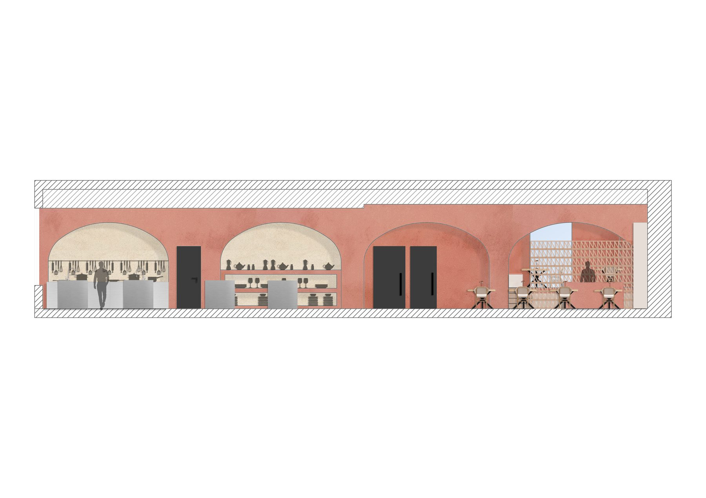
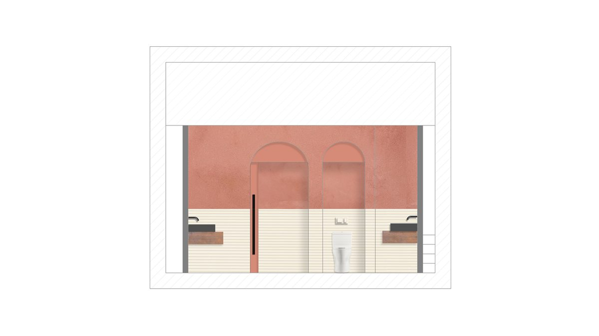

Un espacio donde sustancia + luz se funden en una experiencia sensorial integral. Una reinterpretación contemporánea de la atmósfera mediterránea.
El proyecto nace de la fusión de sustancia y luz como ejes de una experiencia sensorial integral: una estética moderna, cálida y envolvente, sustentada en el color terracota y las formas naturales.
A través de una paleta de tonos arcilla y rojizos, combinada con microcemento, ladrillo visto y cerámicas artesanales, el espacio evoca lo orgánico, lo manual y una reinterpretación contemporánea de la estética mediterránea.
Una propuesta gourmet que integra gastronomía, diseño y espacio en una atmósfera emocional y acogedora, deliberadamente alejada de lo rígido o tradicional.
Cinco tonos que sostienen la identidad del proyecto y conducen la luz por el espacio.
Texturas y acabados que sostienen la atmósfera del proyecto.
La arquitectura interior se construye con trazos curvos, arcos y volúmenes suaves. Esta elección formal favorece una circulación fluida y genera una atmósfera emocional y acogedora.
El arco aparece como elemento estructural y simbólico, vinculando la propuesta con la tradición arquitectónica mediterránea sin imitarla de forma literal.
Vistas del espacio bajo su propia luz.



El punto de partida: un local urbano de alto flujo peatonal, con condicionantes que el proyecto convierte en oportunidades.
El local se sitúa en una zona comercial concurrida del centro de una ciudad mediterránea. La relación visual con la calle se entiende como un activo: no un escaparate convencional, sino un mecanismo para anticipar desde fuera la atmósfera cálida del interior.
La traducción técnica del proyecto.


